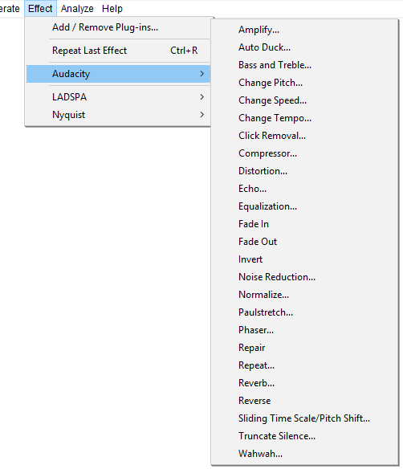

Effect Menu: Audacity
Built-in effects support saving of user presets but do not yet support real-time preview or import/export of presets from/to other machines.
- Click, or hover, on any menu item in the image to read about that command. Skip the image
- 
Built-in effects
Audacity's built-in effects (those that appear in the application irrespective of the contents of your Audacity and other "Plug-Ins" folders) are above the divider in the Effect menu.
All selected tracks are previewed irrespective of whether the tracks are muted or soloed. This is because the effect is applied to the selected audio. If Preview does not sound quite as you want, adjust the controls of the effect and Preview again.
Built-in effects support saving of user presets but do not yet support real-time preview or import/export of presets from/to other machines.
Amplify...
Increases or decreases the volume of the audio you have selected. When you open the dialog, Audacity automatically calculates the maximum amount you could amplify the selected audio without causing clipping (distortion caused by trying to make the audio too loud).
Auto Duck...
Reduces (ducks) the volume of one or more tracks whenever the volume of a specified "control" track reaches a particular level. Typically used to make a music track softer whenever speech in a commentary track is heard.
Bass and Treble...
Increases or decreases the lower frequencies and higher frequencies of your audio independently. It behaves just like the bass and treble controls on a domestic stereo system.
Change Pitch...
Change the pitch of a selection without changing its tempo.
Change Speed...
Change the speed of a selection, also changing its pitch.
Change Tempo...
Change the tempo and length (duration) of a selection without changing its pitch.
Classic Filters...
Provides three different types of filters which together emulate the vast majority of analog filters, and provides useful tools for analysis and measurement.
Click Removal...
Click Removal is designed to remove clicks on audio tracks and is especially suited to declicking recordings made from vinyl records. It will usually work best on very short clicks. For broader individual pops in selections up to 128 samples wide (about three milliseconds at 44100 Hz project rate), you could try the Repair effect.
Compressor...
Compresses the dynamic range by two alternative methods. The default "RMS" method makes the louder parts softer, but leaves the quieter audio alone. The alternative "peaks" method makes the entire audio louder, but amplifies the louder parts less than the quieter parts. Make-up gain can be applied to either method, making the result as loud as possible without clipping, but not changing the dynamic range further.
Distortion...
Use the Distortion effect to make the audio sound distorted. By distorting the waveform the frequency content is changed, which will often make the sound "crunchy" or "abrasive".
Technically this effect is a waveshaper. The result of waveshaping is equivalent to applying non-linear amplification to the audio waveform. Preset shaping functions are provided, each of which produces a different type of distortion.
Echo...
Repeats the selected audio again and again, normally softer each time. The delay time between each repeat is fixed, with no pause in between each repeat. For a more configurable echo effect with a variable delay time and pitch-changed echoes, see Delay...
Equalization...
Adjusts the volume levels of particular frequencies.
Fade In
Applies a fade-in to the selected audio, so that the amplitude changes gradually from silence at the start of the selection to the original amplitude at the end of the selection. The shape of the fade is linear. The rapidity of the fade-in depends entirely on the length of the selection it is applied to.
Fade Out
Applies a fade-out to the selected audio, so that the amplitude changes gradually from the original amplitude at the start of the selection down to silence at the end of the selection. The shape of the fade is linear. The rapidity of the fade-out depends entirely on the length of the selection it is applied to.
Invert
Flips the audio samples upside-down. This normally does not affect the sound of the audio at all. It is occasionally useful for vocal removal.
Noise Reduction...
Reduces constant background noise such as fans, tape noise, or hums. It will not work for removing talking or music in the background.
Normalize...
Use the Normalize effect to set the maximum amplitude of a track, equalize the amplitudes of the left and right channels of a stereo track and optionally remove any DC Offset from the track.
Paulstretch...
Use Paulstretch only for an extreme time-stretch or "stasis" effect. This may be useful for synthesizer pad sounds, identifying performance glitches or just creating interesting aural textures. Use Change Tempo or Sliding Time Scale rather than Paulstretch for tasks like slowing down a song to a "practice" tempo.
Phaser...
The name "Phaser" comes from "Phase Shifter", because it works by combining phase-shifted signals with the original signal. The movement of the phase-shifted signals is controlled using a Low Frequency Oscillator (LFO).
Repair
Fix one particular short click, pop or other glitch no more than 128 samples long.
Repeat...
Repeats the selection the specified number of times.
Reverb...
Adds ambience or a "hall effect".
Reverse
Reverses the selected audio, so that it will sound as if it is playing from the end to the start.
Sliding Time Scale / Pitch Shift...
Allows you to make a continuous change to the tempo and/or pitch of a selection by choosing initial and/or final change values.
Time Tracks can be used to bend tempo more flexibly (also affecting pitch) using Envelope Tool.
Truncate Silence...
Automatically try to find and eliminate audible silences. Don't use with faded audio.
Wahwah...
Rapid tone quality variations, like that guitar sound so popular in the 1970's.
Wahwah uses a moving bandpass filter to create its sound. A low frequency oscillator (LFO) is used to control the movement of the filter throughout the frequency spectrum.
The phase of the left and right channels is automatically adjusted when given a stereo track, so that the effect seems to travel across the speakers.